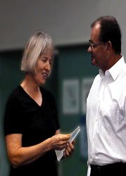

Jacinta has been part of the Orchestra from the beginning when she played 1st Clarinet at the first performance on Sunday, 29th October 2000. She has been on the management committee and was a voluntary manager of the Orchestra. Jacinta has had the task of being Rehearsal Conductor on many occasions and conducted a performance in 2004. Over the years, through her teaching she has been able to encourage many players to join the Orchestra and has mentored many young woodwind players.
Jacinta Payne